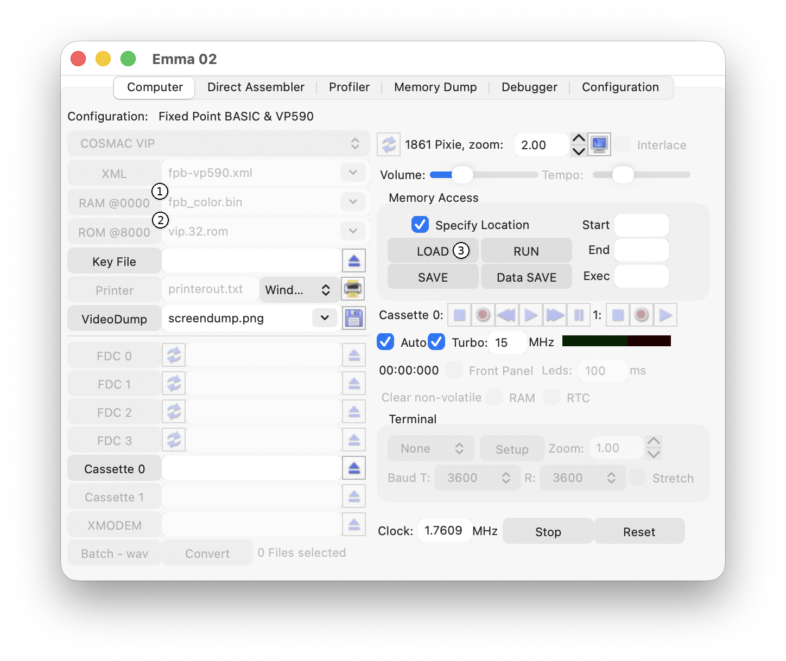

How do I load my SW into an emulated computer?
There are multiple ways to load SW into an emulated computer, choose one of the following options depending on your needs and/or preference:
- For loading SW before the computer starts use the ROM, RAM or NVRAM buttons. For more details see ROM, RAM, NVR.
- For loading SW directly into the emulated computer after startup, use the LOAD buttons in the 'Memory Access' area:

For more details see the Memory Access section or:
- For loading SW using the emulated computers cassette interface see the Cassette Support section.
- For loading SW using the emulated computers disk interface see the Disk Support section.